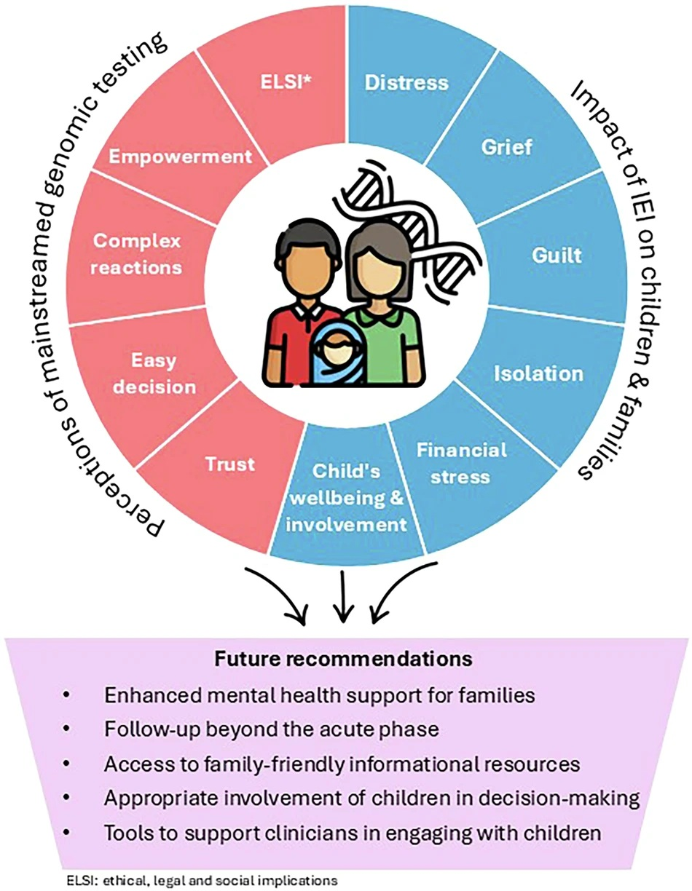
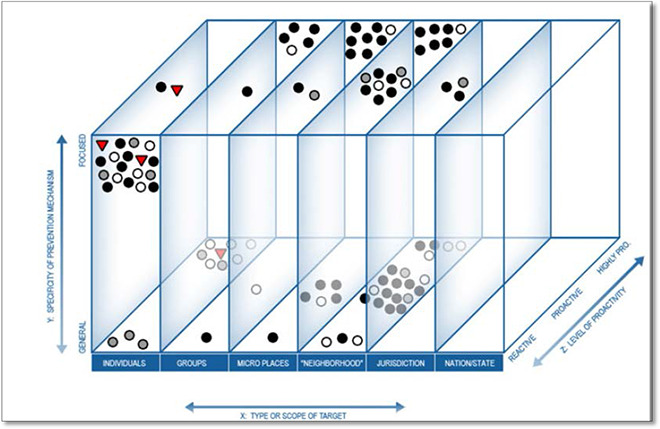
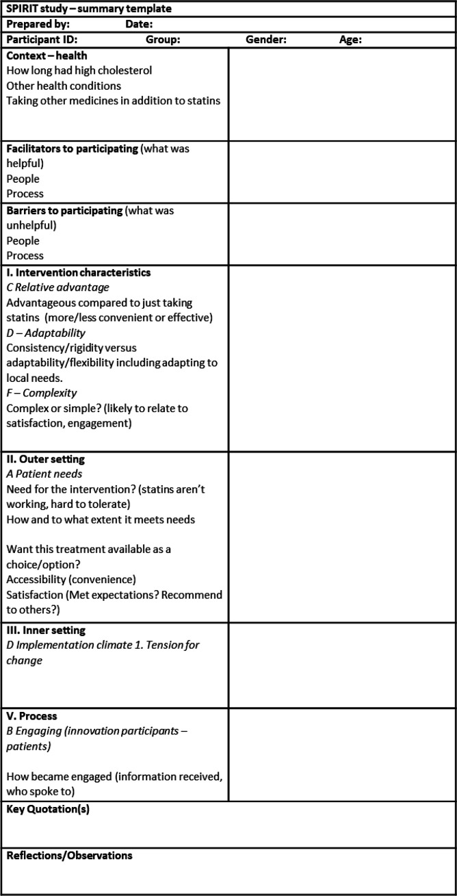
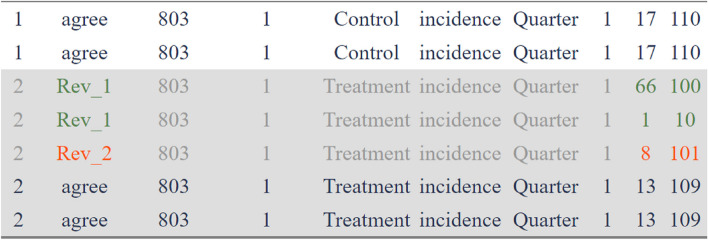
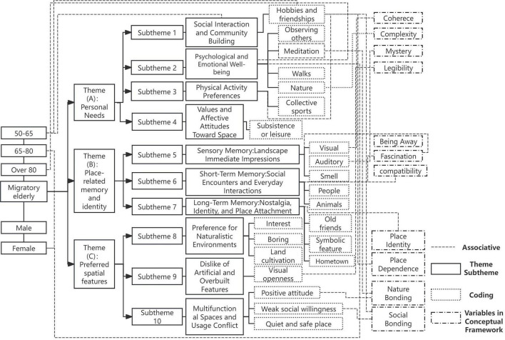

Coded quote matrix
About
A coded quote matrix is a structured grid with research participants along one axis and themes or codes along the other. Each cell contains a representative quote, a color-coded presence indicator, or a frequency count. The result looks like a spreadsheet but reads like a research argument — it lets you see at a glance which themes appeared across which participants, how consistently, and in whose words. The matrix is a hybrid artifact: qualitative in its content (real quotes), quantitative in its structure (systematic coverage across participants and themes). It makes the scope of analysis legible without losing the texture of individual voices.
When to use
Use a coded quote matrix when presenting findings from interviews with eight or more participants across five or more recurring themes. It is especially effective in portfolio case studies to demonstrate that your analysis was systematic rather than cherry-picked. It also helps clients and stakeholders see the evidence base for each insight claim.
When not to use
Do not use a coded quote matrix for small studies where the grid would be mostly empty — it implies a completeness that the data doesn't support. Also avoid it when the themes are still emergent and not yet stabilized; the matrix is a presentation of completed analysis, not a tool for doing the analysis.
References
Examples
Click any example to view full size and visit the original source.




